L1 使用Terragrunt优化Terraform代码
Terragrunt它如何帮助我们减少Terraform 代码中的代码冗余。我们将讨论了它的基本原理和使用案例。
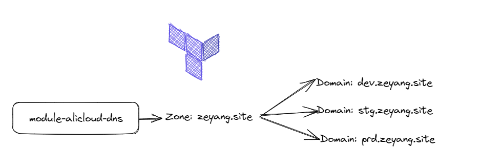
Terragrunt是一个开源的基于命令行的扩展IaC（基础设施即代码）工具，它是Terraform的一个封装器，使得Terraform代码更易于管理，尤其在处理大型复杂基础设施时更为方便。它提供了诸多便利功能，例如自动化环境管理，管理重复代码，自动验证IAM和VPC等等
本次实验为了演示效果，我们创建模块module-alicloud-dns用于后面各个环境引用。然后先通过terraform原始代码进行发布，最后terragrunt优化代码并发布资源。代码库：https://jihulab.com/terraform3
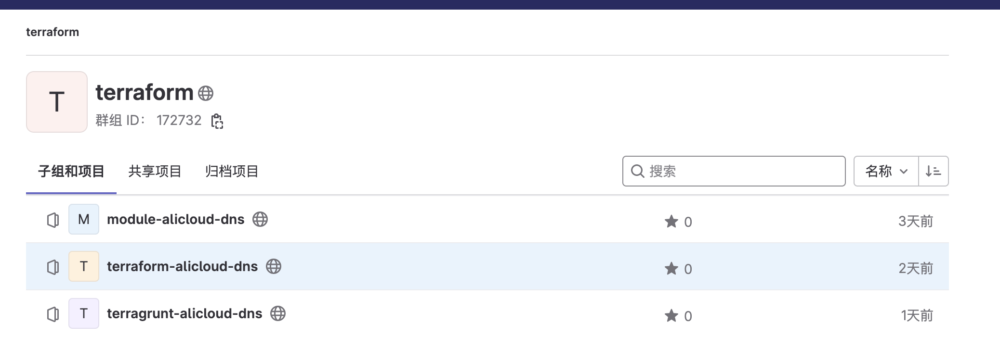
配置AK、SK、Region认证信息
export ALICLOUD_ACCESS_KEY="LTAI5B"
export ALICLOUD_SECRET_KEY="soXvKoF6G"
export ALICLOUD_REGION="cn-beijing"
使用Terraform代码发布基础设施
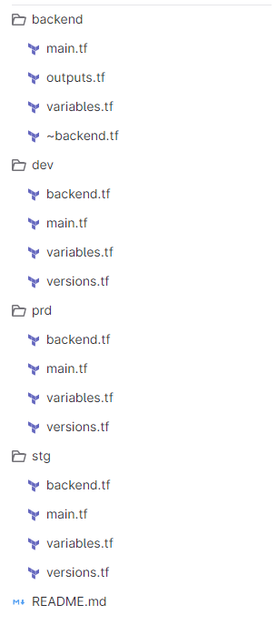
部署Backend
main.tf 定义阿里云的OSS bucket 和tablestore. (oss\tablestore的命名可以自定义，唯一)
provider "alicloud" {
region = "cn-beijing"
}
## oss
resource "alicloud_oss_bucket" "tfbucket" {
bucket = "tf-backend-datas"
acl = "private"
}
## tablestore
resource "alicloud_ots_instance" "tftable" {
name = "tftablenew"
description = "terraform tablestore"
accessed_by = "Any"
tags = {
Created = "TF"
For = "Building table"
}
}
resource "alicloud_ots_table" "basic" {
instance_name = alicloud_ots_instance.tftable.name
table_name = "myterraformtable"
primary_key {
name = "LockID"
type = "String"
}
time_to_live = -1
max_version = 1
deviation_cell_version_in_sec = 1
}
使用命令部署：（注意先把.backend.tf移动到其他目录）
terraform init
terraform plan
terraform apply --auto-approve
将状态文件从本地转换成OSS -- 加入backend.tf (将backend.tf放回原处)后运行terraform init
terraform {
backend "oss" {
bucket = "tf-backend-datas" #要和部署的一致
prefix = "global/backend"
key = "terraform-global-backend.tfstate"
region = "cn-beijing"
tablestore_endpoint = "https://tftablenew.cn-beijing.ots.aliyuncs.com" #注意tablestore的命名
tablestore_table = "myterraformtable"
}
}
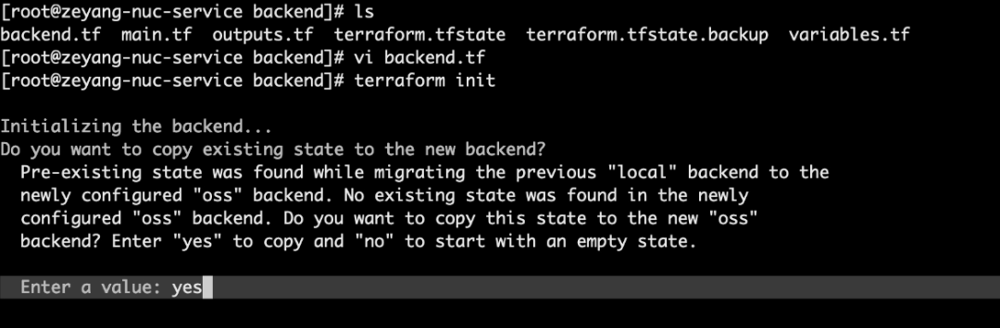
在阿里云控制台进行验证，如图所示。
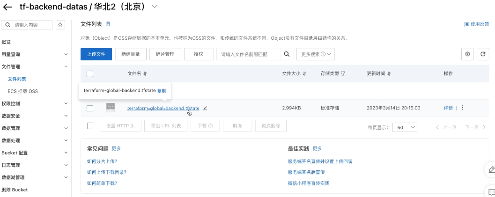
部署Dev环境
进入dev目录，可以看到backend.tf、main.tf、variables.tf、versions.tf。
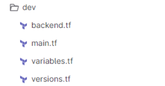
检查backend.tf中的oss和tablestore的命名是否和部署的backend是否一致。
验证一致后， 运行部署命令：
terraform init
terraform plan
terraform apply --auto-approve
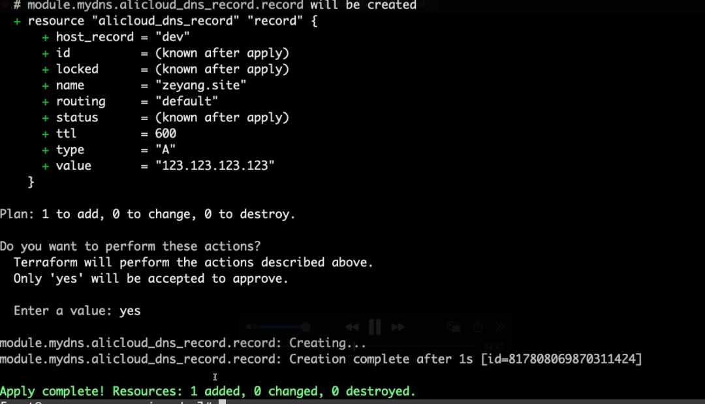
在阿里云控制台进行验证，如图所示。
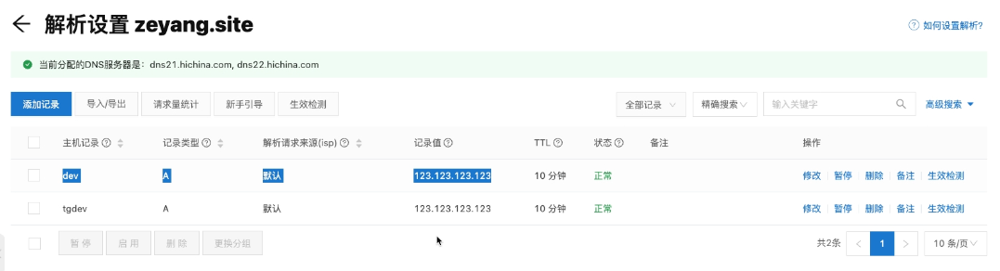
此处不再重复演示STG和PRD环境的发布，如有需要可以自行参考DEV环境进行发布STG和PRD环境。
Terraform的问题
- versions.tf 代码重复
- module 导入的代码重复
- backend.tf配置代码重复
- provider配置重复
Terragrunt
Terragrunt是由 Gruntwork 维护的Terraform 的包装器，允许管理远程状态和 Terraform 模块。它旨在减少代码重复。此外，它非常易于使用，因为您只需安装它并在所有 Terraform CLI 命令中替换terraform为terragrunt即可。
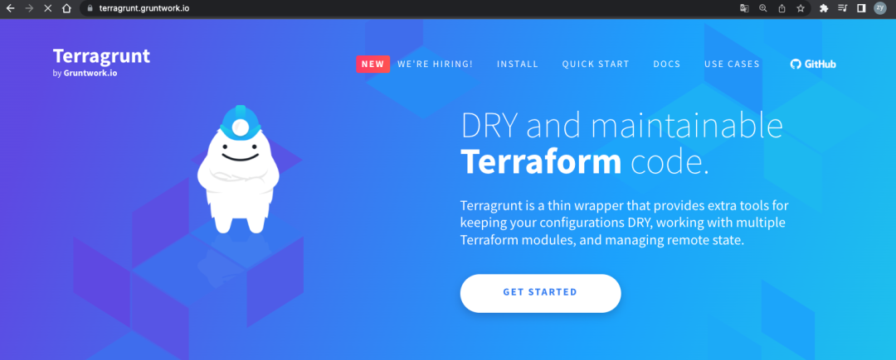
让我们看看我们可以用 Terragrunt 做些什么来改进我们的 Terraform 代码库！将 Terraform 代码的逻辑与其实现分离:
Terragrunt 的主要优点是它允许将代码 Terraform 的逻辑（位于Terraform模块中）与其实现（位于调用 Terraform 模块的不同环境的配置）分离。因此，Terragrunt 可以被视为编排 Terraform 模块的工具。
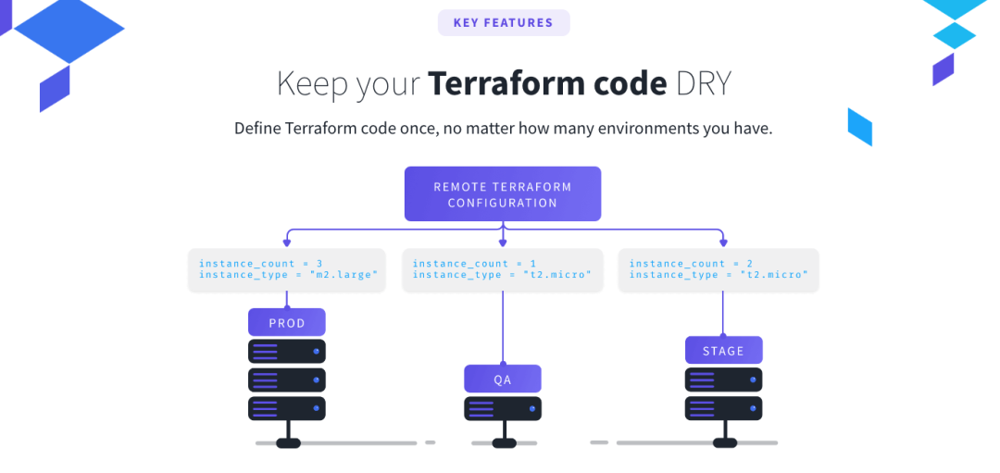
具体来说，我们会将*.tf配置中的传统文件替换为 Terragrunt.hcl配置文件。通过这样做，我们将能够定义module-alicloud-dns在我们存储库中的任何地方调用模块时传递的输入值。在此配置中，值分解很简单！
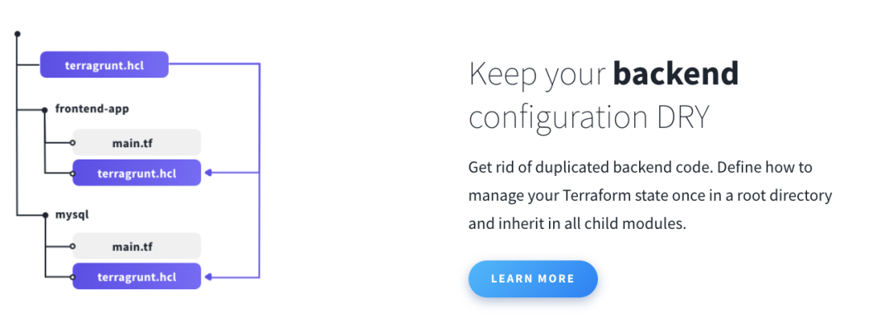
使用Terragrunt优化TF代码
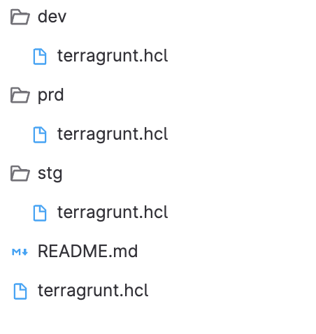
将旧（Terraform）代码中的Provider、Backend、Terraform、Module配置放到根目录下的terragrunt.hcl然后每个环境下的terragrunt.hcl配置集成root配置。
优化Provider配置
文件：/terragrunt.hcl
// define provider
generate "provider" {
path = "provider.tf"
if_exists = "overwrite_terragrunt"
contents = <<EOF
provider "alicloud" {
}
EOF
}
优化Terraform配置
文件：/terragrunt.hcl
// define terraform configuration
generate "versions" {
path = "versions.tf"
if_exists = "overwrite_terragrunt"
contents = <<EOF
terraform {
required_version = ">=1.1.8"
required_providers {
alicloud = {
source = "hashicorp/alicloud"
version = "1.164.0"
}
}
}
EOF
}
优化Module配置
文件：/terragrunt.hcl
// define terraform configuration
generate "versions" {
path = "versions.tf"
if_exists = "overwrite_terragrunt"
contents = <<EOF
terraform {
required_version = ">=1.1.8"
required_providers {
alicloud = {
source = "hashicorp/alicloud"
version = "1.164.0"
}
}
}
EOF
}
优化Module配置
文件：/terragrunt.hcl
// define modules
terraform {
source ="git::https://jihulab.com/terraform3/module-alicloud-dns.git?ref=v0.0.1"
}
优化Backend配置
文件：/terragrunt.hcl
// define backend
remote_state {
backend = "oss"
generate = {
path = "backend.tf"
if_exists = "overwrite_terragrunt"
}
config = {
bucket = "tf-backend-datas"
prefix = "env/${path_relative_to_include()}"
key = "terraform.tfstate"
region = "cn-beijing"
tablestore_endpoint = "https://tftablenew2023.cn-beijing.ots.aliyuncs.com"
tablestore_table = "myterraformtable"
}
}
Dev环境继承配置
文件：/dev/terragrunt.hcl
include "root" {
path = find_in_parent_folders()
}
inputs = {
dns_zone_name = "zeyang.site"
dns_record = "tgdev"
eip = "123.123.123.123"
record_type = "A"
}
运行命令：
terragrunt init
terragrunt plan
terragrunt apply
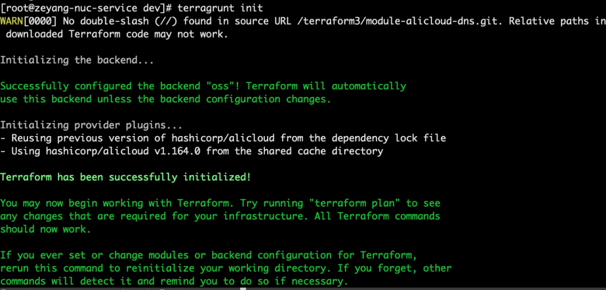
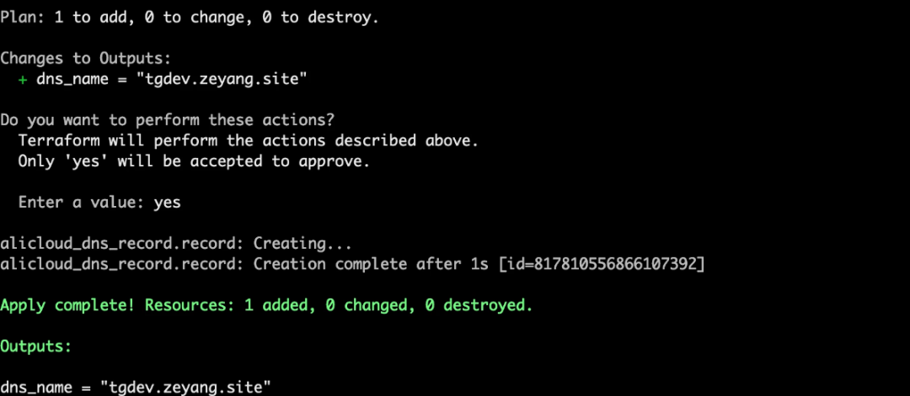
在阿里云控制台进行验证，如图所示。
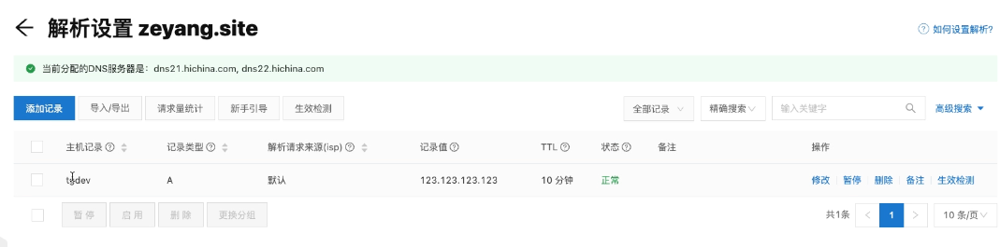
Stg环境继承配置
文件：/stg/terragrunt.hcl
include "root" {
path = find_in_parent_folders()
}
inputs = {
dns_zone_name = "zeyang.site"
dns_record = "tgstg"
eip = "123.123.123.124"
record_type = "A"
}
运行terragrunt init命令后会生成.terragrunt-cache目录：
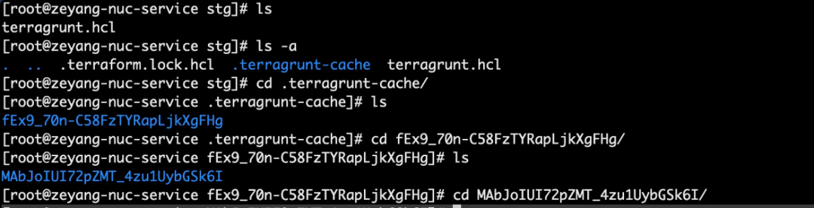
会自动生成这些文件：
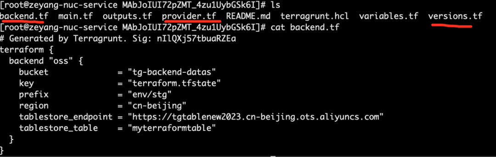
总结：
在本文中，我们发现了Terragrunt以及它如何帮助我们减少Terraform 代码中的代码冗余。我们讨论了它的基本原理和使用案例。